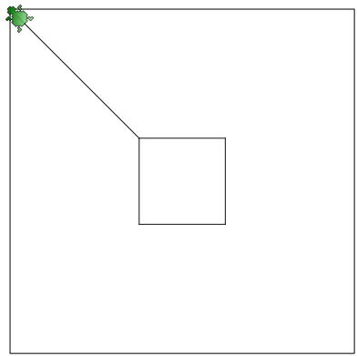

Тема: Язык программирования Logo
Подведем итог того, что мы уже знаем об управлении черепахой и холстом.
Это, пожалуй, всё, что нам известно на сегодняшний день.
Команда иди перемещает черепаху в определенное координатами (x и y) место. При таком перемещении (с помощью команды иди) на холсте не остается никакого следа. Можно представить, что мы как бы поднимаем черепаху в одном месте, а затем опускаем ее в другом. Однако черепаху можно также перемещать таким образом, чтобы на холсте оставался след от ее перемещения. Для этого используются другие команды - вперёд и назад.
Робот-черепаха не слишком гибкое создание, ходит только головой вперёд, или пятиться задом назад. Понятно, что после передвижения ее местоположение меняется, она оказывается в новом месте холста и уже имеет другие координаты местонахождения. При перемещении черепахи с помощью команд вперёд и назад указываются не координаты нового места, где она должна оказаться, а расстояние, на которое ей следует переместиться от первоначального положения. Расстояние измеряется теми же точками, что и размер холста.
(Обратите внимание на букву ё в команде вперёд, если вместо нее будет е, то произойдет ошибка.)
Если черепахе дать команду вперёд, то она проползет головой вперёд и оставит за собой след - черную линию. Если черепахе дать команду назад, то она попятится, а линия окажется перед ней.
Вот пример кода и результат, который он формирует на холсте:
сброс вперёд 99 иди 100, 200 назад 50
Первоначально черепаха стоит в центре холста. Мы заставляем ее идти вперёд на расстояние в 99 точек. После этого перемещаем ее в точку с координатой 100х200 и приказываем двигаться задом на 50 точек.
Запрограммируйте изображение, представленное ниже. При этом верхний ряд линий должен формироваться командой вперёд, а нижний - командой назад.
Как вы могли заметить, мы научились рисовать только вертикальные линии, т.к. голова черепахи всегда смотрит вверх, а хвост, соответственно, - вниз. А как же провести горизонтальную линию или линию под любым углом к главной оси? (Пусть главной осью у нас будет вертикальная линия.)
Оказывается нашего робота можно поворачивать на заданный нами градус. Для этого используется команда направление. Полный поворот вокруг своей оси приравнивается к 360 градусам. Черепаха, смотрящая точно вверх имеет направление 0 (или 360). Смотрящая вправо — 90. Вниз — 180. Влево — 270. Можно указывать промежуточные значения между приведенными выше величинами (например, 11, 135, 200, 355 и т.п.). Например, поворот на угол в -45 градусов даст тот же результат, что и поворот на 315 градусов, т.к. 360 - 45 = 0 + 315.
Рассмотрим пример программы и получившееся при ее выполнении изображение:
сброс направление 90 назад 150 направление 120 вперёд 300
Сначала черепаха была повернута на 90 градусов и прошлась задом на 150 точек. Затем ее повернули на 120 градусов по отношению к главной оси и сказали ползти естественным ходом (т.е. головой вперёд).
Если вам трудно понять как повернуть черепаху, чтобы задать ей желаемое направление, можно воспользоваться специальным инструментом, который находится в меню Сервис ? Выбор направления.
Поводите мышкой по окружности и вы заметите как красная линия и черепашка поворачиваются. Справа в поле Новое направление вы увидите значение градусов. Можно его просто запомнить, а потом использовать в своей программе. Однако можно поступить и по другому. В выпадающем списке Команда выбрать команду направление. Далее нажать кнопку Копировать в буфер обмена или Вставить в редактор. Первую лучше нажимать, когда вы не уверенны, что курсор в редакторе кода стоит в нужной строке. После закрытия данного диалогового окна можно выполнить операцию вставки из буфера обмена в редактор кода.
Напишите программы, в результате выполнения которых робот нарисует на холсте представленные ниже изображения (внешний квадрат — это границы холста, его программировать не надо).
Подсказка: у второго изображения левая и правая стороны симметричны. Сначала создайте одну сторону, затем скопируйте код и вставьте его ниже (только не копируйте команду сброс), после этого измените градусы (числа у команды направление) на противоположные (допишите перед числами минус или удалите его).
